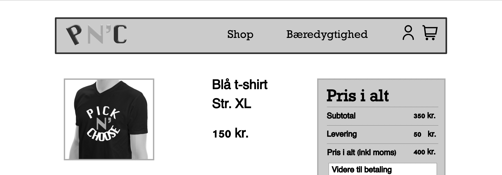

03.02.02 Løsning
Dette tema omhandlede UX. Det betyder at der i denne opgave var et stort fokus på research og dataindsamling. For at komme op med mit koncept har jeg derfor brugt metoderne: desk research, observation, surveys og interviews til at lære mere om markedet og forbrugerne. Jeg lærte også at forbrugere ikke er så tålmodige når de shopper, derfor har jeg gjort brug af 5-sekunders reglen for hurtigst muligt at fange forbrugerens opmærksomhed. Fokuset fra dette projekt er altså at give brugerne den bedst mulige oplevelse.
